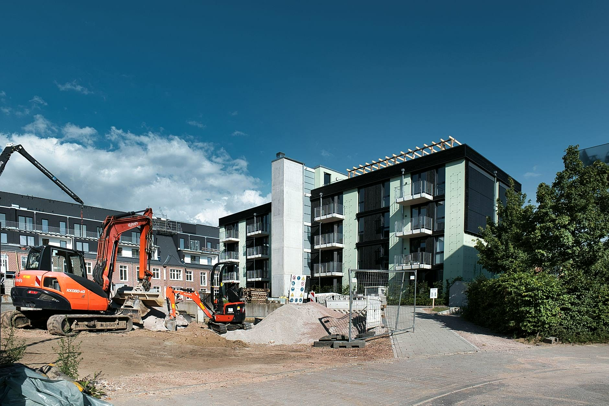
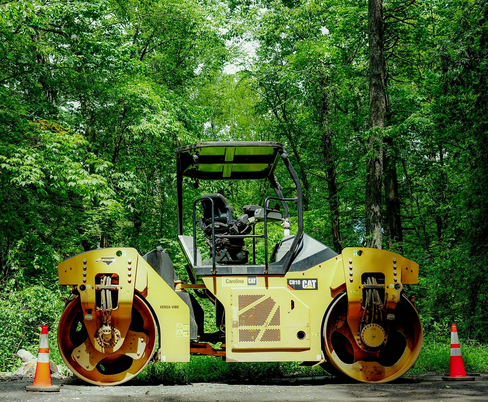
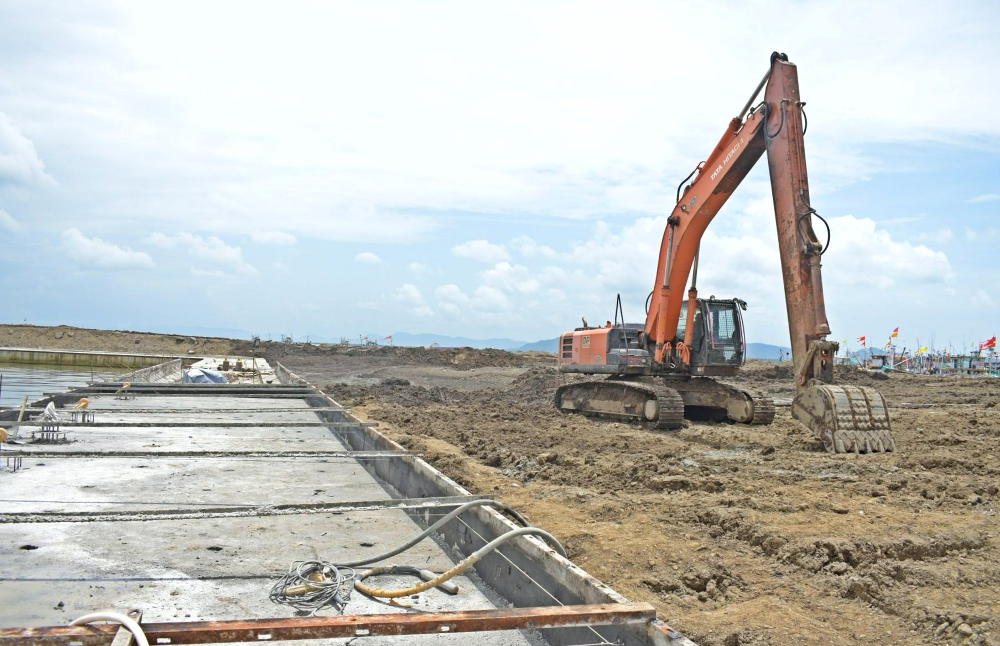
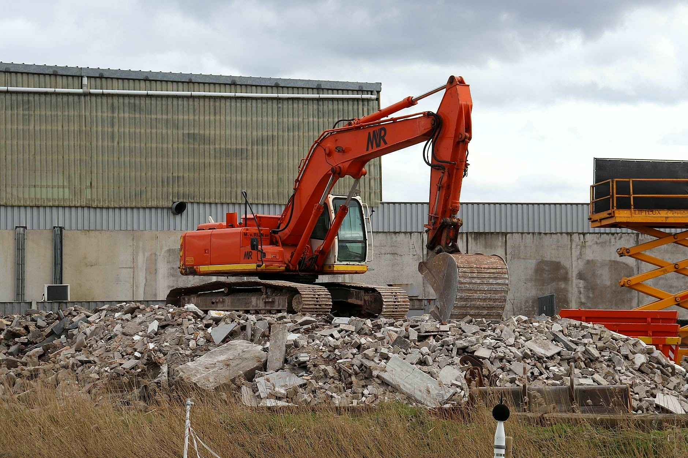
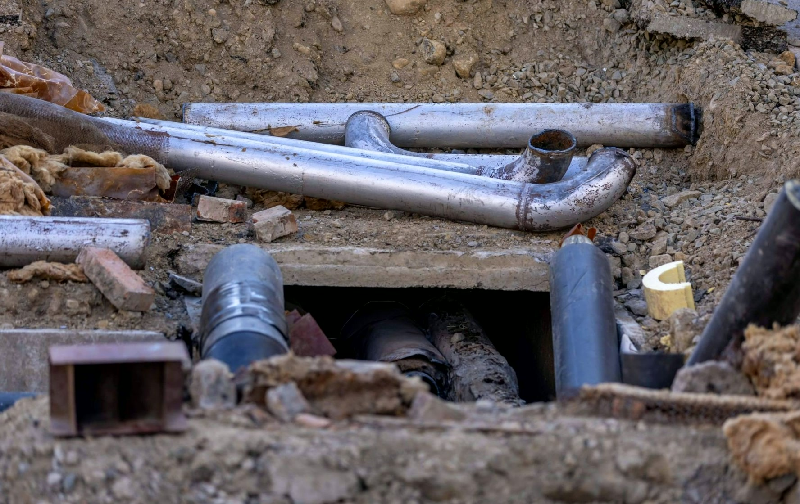
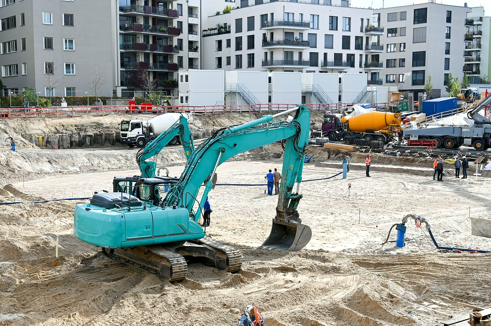
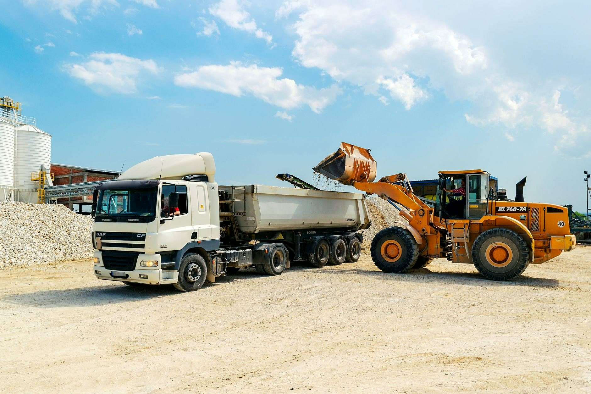

Prace ziemne i drogowe od wykopu po nawierzchnię
Zaczynamy tam, gdzie na działce jeszcze nic nie ma: wykop, wyrównanie terenu, przyłącza, podbudowa wjazdu. Rozbieramy też stare budynki i wozimy kruszywo, ziemię i gruz, więc przy jednym zleceniu masz jeden numer telefonu. Cenę podajemy po obejrzeniu terenu.

Drogi dojazdowe i place
Korytowanie, podbudowa z kruszywa układana warstwami i zagęszczana walcem, na wierzchu kostka, asfalt albo sam tłuczeń. Drogi wewnętrzne, dojazdy do posesji i hal, place manewrowe i parkingi. Spadki prowadzimy tak, żeby woda nie stała na nawierzchni.

Wykopy i przygotowanie terenu
Zdejmujemy humus, wybieramy grunt pod ławy, płytę albo piwnicę i wyrównujemy działkę do poziomu z projektu. Ziemię odkładamy na działce albo wywozimy, jak wolisz.

Rozbiórki i wyburzenia
Stare stodoły, obory, garaże i budynki gospodarcze, fundamenty i betonowe posadzki. Rozbieramy maszyną, gruz wywozimy, a plac zostawiamy równy i przejezdny.

Przyłącza wody i kanalizacji
Wykopy pod wodociąg, kanalizację i przyłącza do budynku. Rury układamy na podsypce, a po odbiorze zasypujemy wykop i zagęszczamy go warstwami, żeby nic się potem nie zapadało.

Budowa budynków
Stany surowe domów jednorodzinnych, budynki gospodarcze, garaże i hale. Zaczynamy od wykopu i fundamentu, więc prace ziemne i budowa idą w jednym zleceniu.

Transport kruszywa, ziemi i gruzu
Dowozimy piasek, żwir i tłuczeń na budowę, wywozimy urobek i gruz z rozbiórki. Transport łączymy z pracą na miejscu, żebyś nie szukał osobno wywrotki.
Która z usług Cię interesuje?
Napisz, co chcesz zrobić - odpowiemy z propozycją i wyceną.